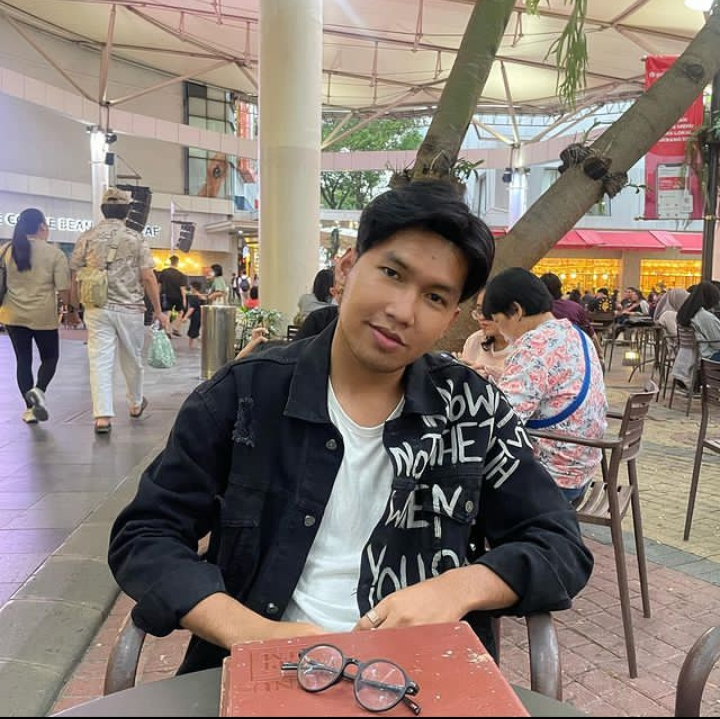

<!DOCTYPE html>
<html>
<head>
    <meta charset='utf-8'>
    <meta http-equiv='X-UA-Compatible' content='IE=edge'>
    <title>HeloBagas</title>
    <meta name='viewport' content='width=device-width, initial-scale=1'>
    <link rel='stylesheet' type='text/css' media='screen' href='main.css'>
    <script src='main.js'></script>
</head>
<body>
    
</body>
</html>
<html lang="en">
    <head>
        <meta charset='utf-8'>
        <title>Bagas Ali Prasetyo</title>
        <meta name='viewport' content='width=device-width, initial-scale=1'>
        <link rel='stylesheet' type='text/css' media='screen' href='main.css'>
        <script src="https://kit.fontawesome.com/79fa34a98c.js" crossorigin="anonymous"></script>
    </head>
    <style>


img {width: 75%; height: auto; image-resolution: 100%; margin-left: 180px;
    }

body {
    background-image: url(images/backround2.webp);
    background-color: rgb(240, 231, 237);
    background-repeat: no-repeat;
    background-size: cover;}

    h1 {font-family: 'Courier New';
    text-align: center;
    font-size: 30px;
    text-shadow: 2px 6px 8px rgb(216, 141, 49);}

    h2 {font-family: "monaco", monospace;
    text-align: center;
    font-size: 25px;
    width: 1200px;
    margin: auto;
    border-style: double;
    border-width: 5px;
    border-color: rgb(119, 119, 94);}


    h3 {font-family: "monaco", monospace;
    font-size: 20px;
    padding: 10px;
    width: 1000px;
    margin: auto;
    text-decoration: underline;}

    p {font-family: "monaco", monospace;
    font-size: 18px;
    text-align: justify;
    padding: 10px;
    width: 900px;
    margin: auto;}

    div {font-family: "monaco", monospace;
        font-size: 18px;
        text-align: justify;
        padding: 10px;
        width: 1200px;
        margin: auto;
        background-color: rgb(218, 228, 190);
        width: 1100px;
        border: 8px solid rgb(235, 177, 107);
        padding: 40px;
        margin: auto;}

    ol {font-family: "monaco", monospace;
        font-size: 18px;
        text-align: justify;}

    ul {font-family: "monaco", monospace;
        font-size: 18px;
        text-align: justify;
        width: 900px;
        margin: auto;
        padding: 30px;
        list-style-type: circle;}


        #Daftar {font-family: "monaco", monospace;
            border-collapse: collapse;
            width: 1100;
            margin: auto;
            padding: 30px;}

        #Daftar td, #Daftar th {
            border: 3px solid #161616;
            padding: 8px;
            font-size: 18px;}

    #Daftar tr:nth-child(even){background-color: #cfdfc4;}

    #Daftar tr:nth-child(odd){background-color: #d0d6aa;}

    #Daftar th {
            padding-top: 12px;
            padding-bottom: 12px;
            text-align: left;
            background-color: #bfc99e;
            color: rgb(6, 5, 5);
            text-align: center;}

        p {outline-color: rgb(151, 151, 134);}
                p.outset {outline-style: outset;}

        a:link, a:visited {
            background-color: rgb(225, 214, 207);
            color: black;
            border: rgb(127, 133, 74);
            padding: 10px 20px;
            text-align: center;
            text-decoration: none;
            display: inline-block;
        }
        a:hover, a:active {
            font-size: 20px;
            padding: 10px;
            width: 180px;
            margin-left: 220px;}
    
    </style>
    <body>
        <br>
        <h1>Mengenal Helo Bagas</h1>
        <br>
        
        <br>
        <br>

        <h2>Salah Satu Buku Karya Helo Bagas</h2>
        <br>
        <br>
        <div><i>Nanti Juga Sembuh Sendiri</i> adalah buku yang sebenarnya jadi ‘cermin’ atau ‘teman curhat’ paling dalam mereka untuk bisa jujur dengan perasaannya sendiri. Begitu banyak orang yang denial dan berpura-pura kuat dan gak punya teman cerita. Buku ini layaknya ‘diary’ yang mana pembaca tidak perlu membaca dari awal. Cukup membuka bab atau tulisan yang sesuai dengan kondisi hati saja. Buku ini berisi kata-kata sederhana, mungkin jauh dari diksi-diksi indah, tapi kesederhanaan & apa adanya itu yang biasanya lebih bisa diterima oleh mereka yang gak baik-baik aja.
            Lambat laun, semakin banyak muncul buku yang bertemakan healing seperti self love dan self improvement dari banyak penulis di Indonesia. Salah satu bukunya yaitu Nanti Juga Sembuh Sendiri yang merupakan karya dari Helo Bagas. Self healing sebenarnya adalah sebuah istilah yang bermakna melakukan proses pemulihan luka pada batin yang dilakukan sendiri. Dengan kata lain self healing adalah proses menyembuhkan diri dari segala perasaan dan pikiran negatif yang ada pada diri kita. 
            Dari sinilah Helo Bagas membuat sebuah buku bertemakan self love, sebuah buku sederhana yang bisa kalian bawa kemana-mana dan bisa kalian baca tanpa harus dari awal halaman buku. Buku yang bisa menjadi teman baik untuk pembacanya.
        <br>


        <br>

        <h2>PROFIL HELO BAGAS</h2>
        <br>
        <d1>
            <dt>
                
            <h3 style="text-align: center;">Nama Lengkap</h3>
            <p style="text-align: center;">Bagas Ali Prasetyo</p>

            <h3 style="text-align: center;">Akun Instagram</h3>
            <p style="text-align: center;">@helobagas</p>

            <h3 style="text-align: center;">Akun Youtube</h3>
            <p style="text-align: center;">Helo Bagas</p>

            <h3 style="text-align: center;">Akun Spotify</h3>
            <p style="text-align: center;">HeloBagas</p>
            </dt>
        </d1>
        <br>

        <h2>Cerita Tentang Helo Bagas</h2>
        <br>
        <br>
        <p>Nama Helo Bagas tentu sudah tidak asing di kalangan remaja. Terlebih melalui Cerita Sebelum Tidur di Youtube serta podcast Kita dan Waktu di Spotify. Saat ini, Bagas telah memiliki 853 ribu pengikut di Instagram dan 1,33 juta subscribers di Youtube.
            Menjadi seorang content creator yang dikenal oleh banyak orang tentu memerlukan proses yang tidak singkat. Hal tersebut seperti yang dialami oleh Bagas Ali Prasetyo, mahasiswa Program Studi (Prodi) Sosiologi Fakultas Ilmu Sosial dan Politik (FISIP) Universitas Sebelas Maret (UNS) Surakarta yang sekarang sudah lulus. Bagas yang saat itu duduk di semester enam merupakan pembuat konten di Instagram @helobagas, Youtube, dan Spotify. 
            Bagas memulai kariernya sebagai seorang penulis di platform Wattpad sejak Ia menginjak kelas 11 Sekolah Menengah Atas (SMA). Awalnya Ia menyukai pelajaran bahasa Indonesia sejak Sekolah Menengah Pertama (SMP). Bahkan, Ia pernah ditunjuk mewakili sekolah dalam lomba cerpen dan berhasil meraih juara. Ketika menginjak SMA, platform Wattpad sedang booming di kalangan remaja. Kemudian ada salah satu temannya yang merekomendasikan cerita di Wattpad. Akhirnya Bagas mengunduh aplikasi tersebut dan memulai menjadi pembaca selama setahun. Hingga pada kelas 11, Ia memberanikan diri untuk mulai menulis.<br><br> 
            Tidak semudah apa yang dipikirkan orang-orang ketika melihat Helo Bagas saat ini. Ia sempat merasakan sulitnya mencari pembaca, bahkan Ia sering memberi tahu teman sekolahnya tiap Ia selesai menulis cerita. Namun, ketika ditanya sekali, dua kali bahkan hingga tiga kali, belum ada yang membaca ceritanya.
            Ia tetap menulis hingga akhirnya salah satu ceritanya masuk ke algoritma Wattpad yang direkomendasikan setiap minggunya. Setelah memiliki nama di Wattpad, Ia kemudian memulai langkahnya terjun ke Instagram untuk melebarkan karyanya. Mulanya, ia mengunggah video singkat satu menit di Instagram yang kemudian mendapat banyak respons positif dari pengikutnya.
            Bagas mengawali membuat akun Instagram @helobagas pada 1 Juli 2017, saat ini telah memiliki 519 ribu pengikut. Akun tersebut berkembang pesat pasca SBMPTN 2018 dengan pertumbuhan pengikut yang cukup pesat. Setelah memiliki nama di Instagram, kemudian Ia mulai menapakkan kariernya di Youtube. Lagi-lagi, tidak semudah yang dibayangkan oleh orang pada umumnya. Ia sempat kesulitan membawa pengikutnya di Instagram untuk menonton kontennya di Youtube. Tidak hanya berhenti di situ, Ia kemudian merambah ke platform Spotify. Bahkan podcast yang ia bawakan menjadi podcast ekslusif Spotify. </p>

        <h3><b>Kalimat Penyemangat</b></h3>
                <ul class="KalimatPenyemangat">
                    <li>Bagas mengatakan bahwa kesedihan itu sama nikmatnya dengan kebahagiaan</li>
                    <p>“Jadi kalau kita bisa ketawa, kita harus bisa nangis, karena kadang kenapa kita sulit bahagia ya karena kita tuh terlalu banyak menahan rasa pahit di hati sendiri, ga dikeluarin jadi cerita ataupun air mata. Misal temen-temen lagi overthinking atau insecure liat pencapaian orang lain, aku selalu percaya apa yang Ibu aku bilang kalau hidup cuma sekali dan gabisa diulang lagi. Jadi apapun yang terjadi, harus kita nikmatin, gitu,” katanya.</p>
                </ul>
        <br>
        <p>Daftar Buku Karya Helo Bagas</p>
        <br>
        <table id="Daftar">
            <tr>
                <th>Judul Buku</th>
                <th>Tahun Terbit</th>
                <th>Halaman Buku</th>
            </tr>
            <tr>
                <th>Night Talks Before Go to Sleep: Sekumpulan pesan dan harapan yang kini terhapuskan</th>
                <th>2019</th>
                <th>348</th>
            </tr>
            <tr>
                <th>Arial & Adara</th>
                <th>2019</th>
                <th>300</th>
            </tr>
            <tr>
                <th>Cerita Kapal Kertas: Jaga diri lo baik-baik</th>
                <th>2021</th>
                <th>264</th>
            </tr>
            <tr>
                <th>Kita & Waktu</th>
                <th>2021</th>
                <th>104</th>
            </tr>
            <tr>
                <th>Nanti Juga Sembuh Sendiri</th>
                <th>2022</th>
                <th>164</th>
            </tr>
            <tr>
                <th>Nanti Juga Terbiasa</th>
                <th>2023</th>
                <th>164</th>
            </tr>
        </table>
        <br>
        <br>
        <h2>Quotes Helo Bagas</h2>
        <br>
        <br>
        <p class="outset">Kalo lo pengen nikmatin hidup coba mulai dengan nikmatin juga saat-saat lo ibadah dan quality time lo dengan Tuhan</p>
        <p class="outset">Karena yang membuat kamu terhambat adalah kamu belum terlalu yakin dengan mimpimu sendiri. Berjalanlah... karena sesungguhnya kamu enggak butuh penerimaan mereka. Trust yourself, every things will be fine.</p>
        <p class="outset">Kadang gak bisa apa-apa selain senyum dan nguatin diri sambil bilang dalam hati, "manusia di bumi itu banyak macamnya, gak bisa semua dipukul jadi rata otaknta."</p>
        <p class="outset">Kalau ditanya, kapan waktu yang tepat untuk berhenti? adalah saat... ketika lo lebih takut kehilangan dia, daripada kehilangan diri lo sendiri.</p>
        <p class="outset">Makasih udah tetep baik ketika aku merasa diri ini jahat, makasih udah selalu menemani ketika aku lagi enggak pantes untuk ditemani.</p>
        <br>
        <br>
        <h2>CONTACT ME</h2>
        <br>
        <br>

            <p><b>Talaga Bestari</b></p>
            <p><i class="fa-solid fa-location-dot"></i> Nurjanah (11210251000013)</p>
            <p><i class="fa-solid fa-phone-volume"></i> +628-5778-586-251</p>
            <p><i class="fa-solid fa-envelope"></i> nurjanahags@gmail.com</p>
        <a href="https://linktr.ee/helobagas?fbclid=PAAab3Q_TaQGVtvrofY_L8CgZmKEvkBc7lbV1Z9zMBSEAQKhQspVSpUxCBvU8">Website Helo Bagas</a>
    </div>

    </body>
    </html>

</body>    
</html>